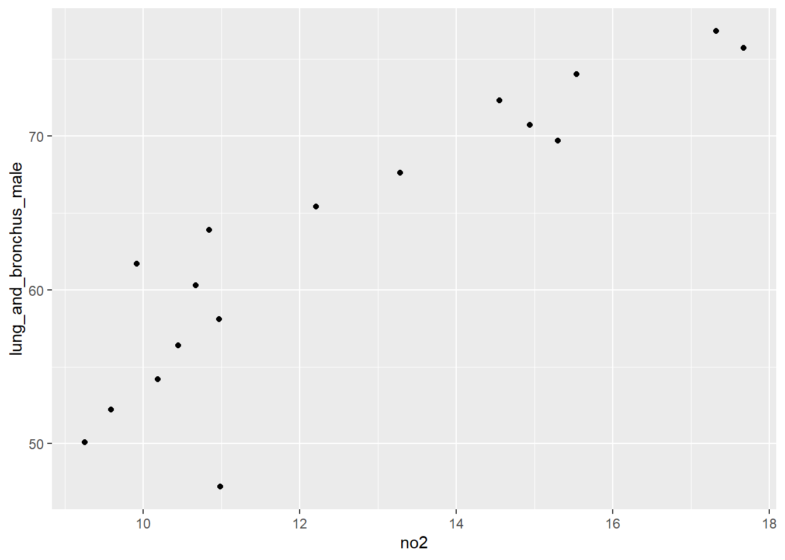
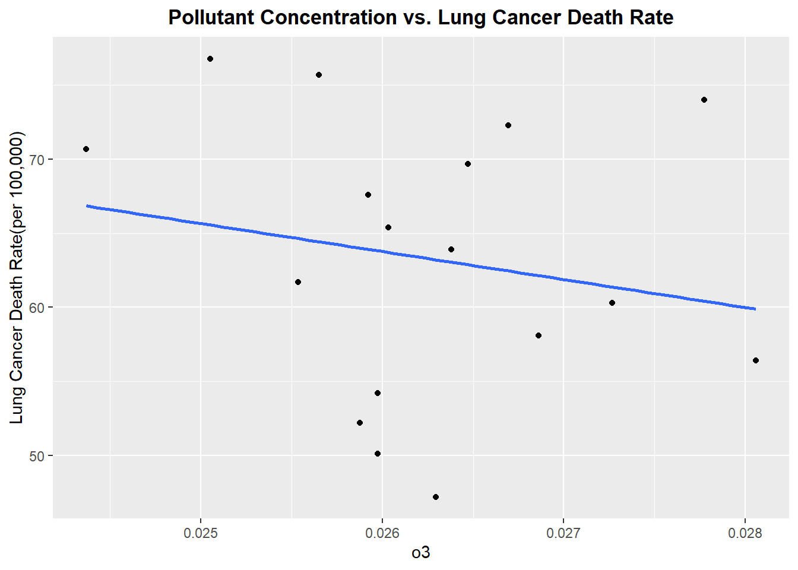
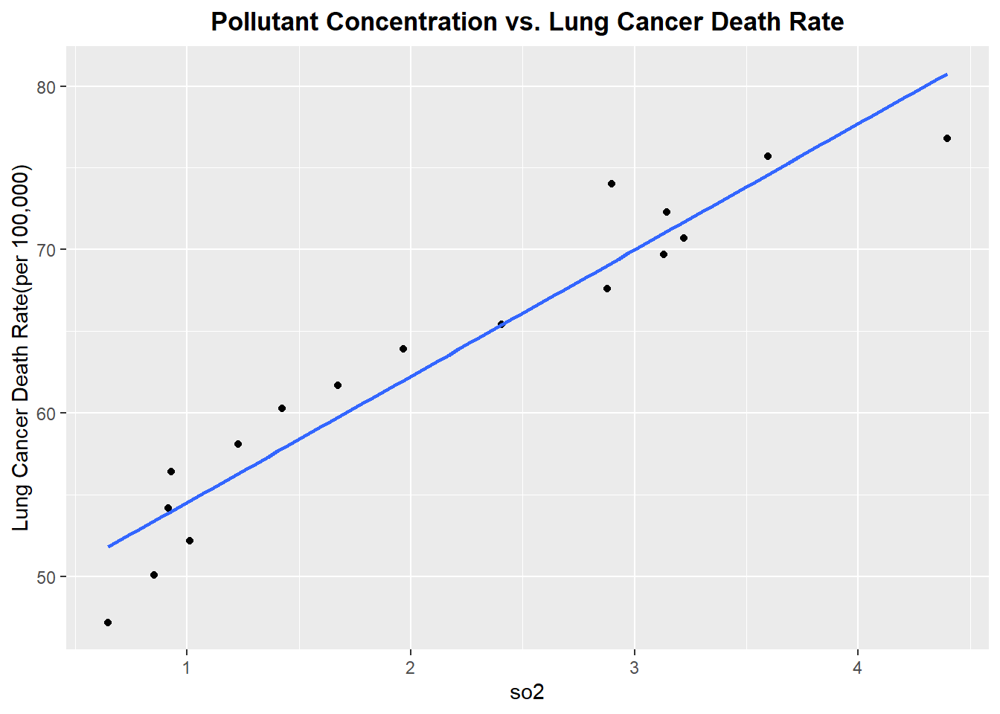
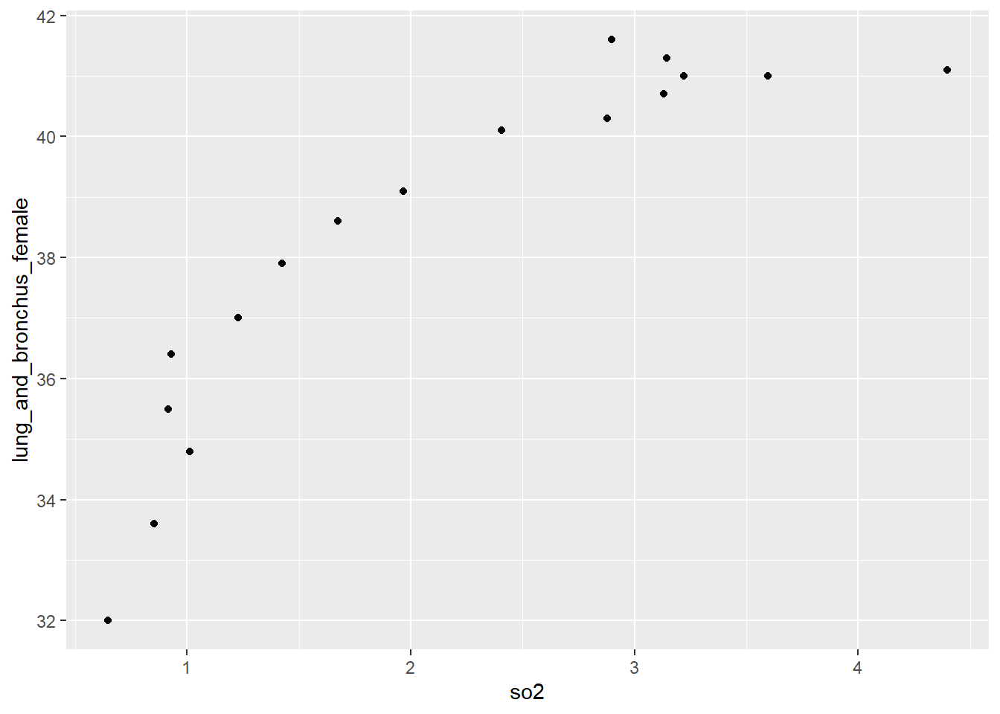
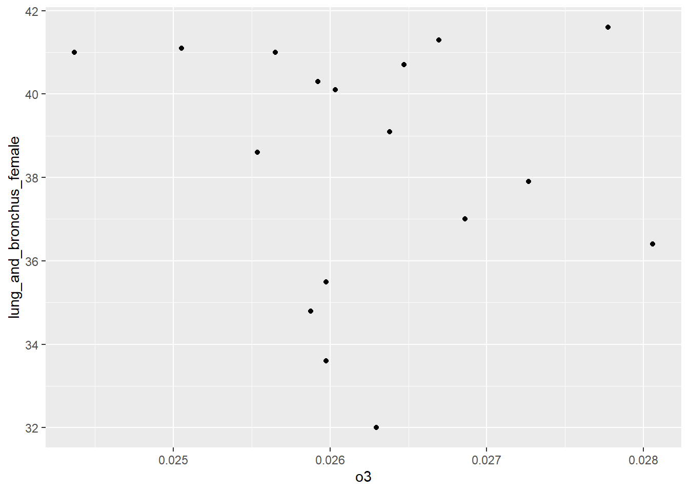
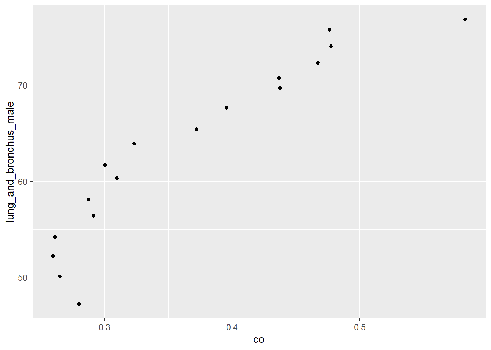
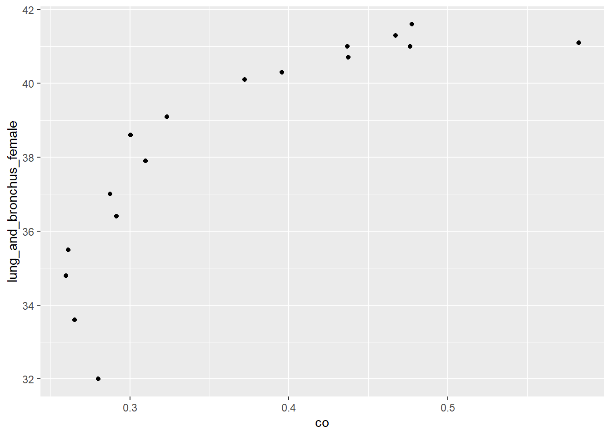
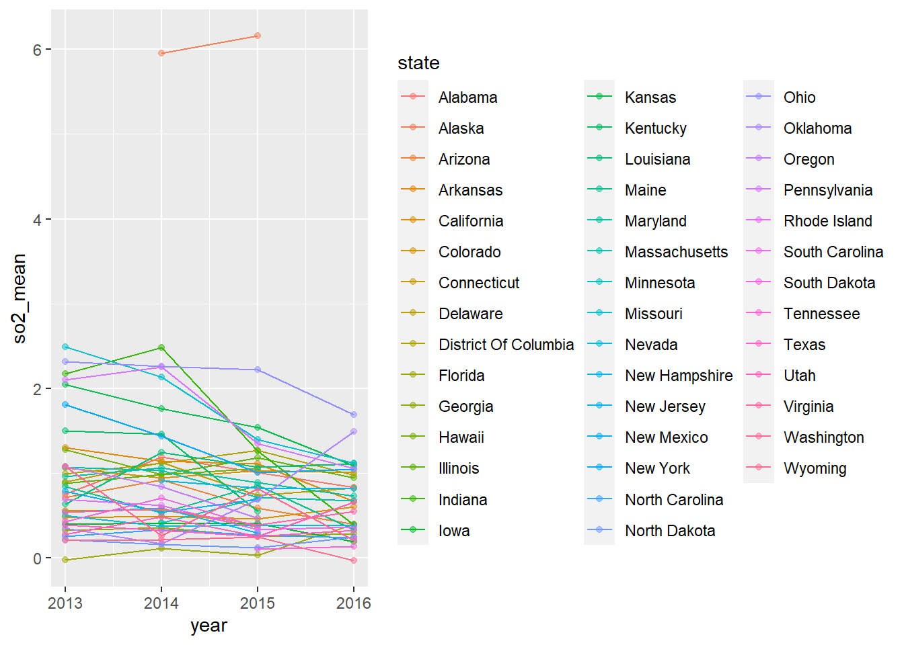
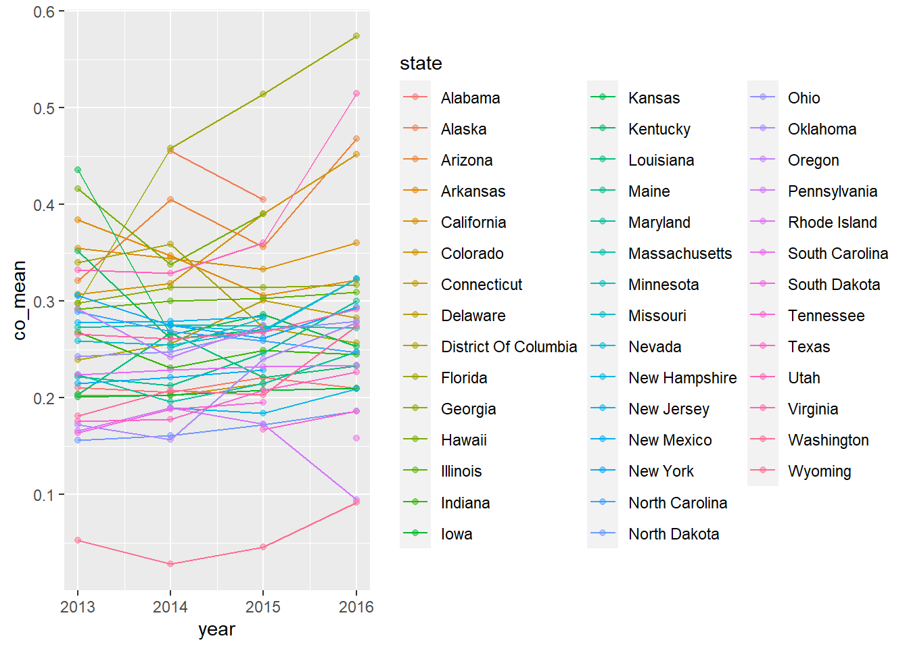

Exploratory Analysis
Exploring Pollution Data Set
modified_pollution =
read_csv("data/uspollution_us_2000_2016.csv") %>%
janitor::clean_names() %>%
select(state, date_local, no2_mean, o3_mean,
so2_mean, co_mean) %>%
rename(
no2=no2_mean,
co=co_mean,
o3=o3_mean,
so2=so2_mean
) %>%
separate(date_local, into = c("year", "month", "day"), sep = "\\-") %>%
select(-c("month", "day")) %>%
group_by(year, state) %>%
summarize(across(everything(), mean)) %>%
mutate_if(is.numeric, ~round(., 3)) %>%
filter(state != "Country Of Mexico") %>%
group_by(year) %>%
summarize(across(everything(), mean)) %>%
select(-c(state)) %>%
mutate(
year = as.numeric(year)
)## New names:
## * `` -> ...1## Rows: 1746661 Columns: 29## -- Column specification --------------------------------------------------------
## Delimiter: ","
## chr (8): Address, State, County, City, NO2 Units, O3 Units, SO2 Units, CO ...
## dbl (20): ...1, State Code, County Code, Site Num, NO2 Mean, NO2 1st Max Va...
## date (1): Date Local##
## i Use `spec()` to retrieve the full column specification for this data.
## i Specify the column types or set `show_col_types = FALSE` to quiet this message.## `summarise()` has grouped output by 'year'. You can override using the `.groups` argument.## `mutate_if()` ignored the following grouping variables:
## Column `year`modified_pollution %>%
knitr::kable(caption="United States Pollutant Concentration from 2000-2016")| year | no2 | o3 | so2 | co |
|---|---|---|---|---|
| 2000 | 17.323000 | 0.0250526 | 4.3962632 | 0.5822632 |
| 2001 | 17.670100 | 0.0256500 | 3.5975000 | 0.4763500 |
| 2002 | 15.537136 | 0.0277727 | 2.8994091 | 0.4774545 |
| 2003 | 14.554696 | 0.0266957 | 3.1442174 | 0.4672609 |
| 2004 | 14.944842 | 0.0243684 | 3.2192105 | 0.4366842 |
| 2005 | 15.296632 | 0.0264737 | 3.1294737 | 0.4373158 |
| 2006 | 13.284269 | 0.0259231 | 2.8768462 | 0.3955769 |
| 2007 | 12.208414 | 0.0260345 | 2.4068621 | 0.3721379 |
| 2008 | 10.843862 | 0.0263793 | 1.9670000 | 0.3232069 |
| 2009 | 9.916679 | 0.0255357 | 1.6744286 | 0.3003214 |
| 2010 | 10.668167 | 0.0272667 | 1.4239667 | 0.3099333 |
| 2011 | 10.971667 | 0.0268611 | 1.2288056 | 0.2875000 |
| 2012 | 10.445514 | 0.0280571 | 0.9306000 | 0.2916286 |
| 2013 | 10.187526 | 0.0259737 | 0.9171053 | 0.2610789 |
| 2014 | 9.591073 | 0.0258780 | 1.0114878 | 0.2597317 |
| 2015 | 9.253191 | 0.0259762 | 0.8508333 | 0.2652381 |
| 2016 | 10.988235 | 0.0262941 | 0.6460588 | 0.2801471 |
modified_pollution %>%
pivot_longer(
no2:co,
names_to = "pollutant_type",
values_to="concentration"
) %>%
ggplot(aes(x=year,y=concentration, group=pollutant_type, color=pollutant_type)) +
geom_point() +
geom_line() +
scale_color_viridis(discrete=TRUE) +
theme_bw() +
labs(
title="Trends in Polluntant Concentration in the US from 2000-2016",
x="Year",
y="Pollutant Concentration(ppm)"
) 
Exploring the Relationship Between Pollutant Concentration and Death Rate
read_death_time =
read_excel("data/DeathTrend.xlsx",
skip = 6) %>%
janitor::clean_names()
x = c("colorectum_female", "colorectum_male", "liver_and_intrahepatic_bile_duct_female", "liver_and_intrahepatic_bile_duct_male", "lung_and_bronchus_female", "lung_and_bronchus_male", "ovary_female", "uterus_cervix_and_corpus_combined_female")
remove_note = function(column_name) {
read_death_time = read_death_time %>%
separate(column_name, into = c(column_name, "note"), sep = "\\-") %>%
select(-note)}
for (i in x) {
read_death_time = remove_note(i)}
death_time =
read_death_time %>%
filter(year %in% 2000:2016) %>%
select(-c("breast_male", "ovary_male", "prostate_female","uterus_cervix_and_corpus_combined_male")) %>%
mutate_at(vars(-("year")), as.numeric) %>%
mutate(year = as.factor(year))merged_death_pollution=
merge(death_time, modified_pollution, by = "year") death_state =
read_excel("data/DeathRate.xlsx", sheet = "State",
skip = 6) %>%
janitor::clean_names() %>%
separate(
col = breast_both_sexes_combined,
into = c("breast_total", "female_breast_only"),
sep = "-"
) %>%
select(-female_breast_only) %>%
mutate(
breast_male = if_else(breast_male == "n/a", "0", breast_male),
cervix_male = if_else(cervix_male == "n/a", "0", cervix_male),
) %>%
mutate_at(vars(-("state")), as.numeric) %>%
filter(state != "Puerto Rico")
```r
death_state %>%
select(state, lung_and_bronchus_female,lung_and_bronchus_male, lung_and_bronchus_both_sexes_combined) %>%
knitr::kable()| state | lung_and_bronchus_female | lung_and_bronchus_male | lung_and_bronchus_both_sexes_combined |
|---|---|---|---|
| All U.S. combined | 32.0 | 46.9 | 38.5 |
| Alabama | 35.7 | 65.5 | 48.5 |
| Alaska | 32.0 | 41.5 | 36.6 |
| Arizona | 27.1 | 36.4 | 31.3 |
| Arkansas | 41.0 | 67.6 | 52.8 |
| California | 24.1 | 33.2 | 28.1 |
| Colorado | 24.5 | 29.2 | 26.5 |
| Connecticut | 29.6 | 38.0 | 33.1 |
| Delaware | 37.0 | 51.2 | 43.2 |
| District of Columbia | 25.8 | 36.4 | 30.4 |
| Florida | 31.0 | 45.3 | 37.5 |
| Georgia | 31.1 | 53.9 | 40.9 |
| Hawaii | 22.6 | 37.4 | 29.3 |
| Idaho | 28.6 | 36.9 | 32.4 |
| Illinois | 34.5 | 50.0 | 41.1 |
| Indiana | 39.9 | 60.5 | 48.7 |
| Iowa | 34.1 | 50.9 | 41.3 |
| Kansas | 35.3 | 49.9 | 41.6 |
| Kentucky | 49.0 | 75.3 | 60.4 |
| Louisiana | 36.6 | 61.6 | 47.5 |
| Maine | 40.0 | 55.3 | 46.7 |
| Maryland | 32.1 | 44.1 | 37.2 |
| Massachusetts | 33.2 | 42.7 | 37.1 |
| Michigan | 37.8 | 52.4 | 44.1 |
| Minnesota | 31.3 | 40.2 | 35.2 |
| Mississippi | 38.1 | 72.3 | 52.8 |
| Missouri | 40.4 | 59.4 | 48.7 |
| Montana | 34.6 | 37.9 | 35.9 |
| Nebraska | 32.3 | 45.3 | 37.9 |
| Nevada | 36.4 | 42.6 | 39.3 |
| New Hampshire | 37.5 | 45.9 | 41.1 |
| New Jersey | 29.9 | 39.0 | 33.7 |
| New Mexico | 22.9 | 31.7 | 26.8 |
| New York | 28.7 | 40.3 | 33.6 |
| North Carolina | 34.6 | 56.8 | 44.1 |
| North Dakota | 29.4 | 42.3 | 35.1 |
| Ohio | 37.9 | 58.3 | 46.7 |
| Oklahoma | 40.4 | 62.2 | 50.0 |
| Oregon | 33.3 | 40.9 | 36.6 |
| Pennsylvania | 33.8 | 50.2 | 40.8 |
| Rhode Island | 37.1 | 49.8 | 42.2 |
| South Carolina | 32.7 | 55.8 | 42.7 |
| South Dakota | 33.5 | 47.5 | 39.3 |
| Tennessee | 40.0 | 66.1 | 51.3 |
| Texas | 27.3 | 43.0 | 34.1 |
| Utah | 14.9 | 21.8 | 18.1 |
| Vermont | 36.5 | 47.7 | 41.4 |
| Virginia | 31.4 | 48.5 | 38.8 |
| Washington | 31.6 | 40.4 | 35.5 |
| West Virginia | 43.0 | 67.1 | 53.6 |
| Wisconsin | 33.0 | 45.7 | 38.5 |
| Wyoming | 29.3 | 33.1 | 30.9 |
death_state %>%
select(state, all_cancer_types_combined_both_sexes_combined) %>%
knitr::kable()| state | all_cancer_types_combined_both_sexes_combined |
|---|---|
| All U.S. combined | 155.5 |
| Alabama | 173.4 |
| Alaska | 152.6 |
| Arizona | 137.9 |
| Arkansas | 177.6 |
| California | 140.3 |
| Colorado | 133.9 |
| Connecticut | 141.2 |
| Delaware | 164.8 |
| District of Columbia | 160.4 |
| Florida | 147.3 |
| Georgia | 159.6 |
| Hawaii | 130.1 |
| Idaho | 153.3 |
| Illinois | 161.7 |
| Indiana | 172.9 |
| Iowa | 160.7 |
| Kansas | 160.8 |
| Kentucky | 191.2 |
| Louisiana | 176.1 |
| Maine | 169.2 |
| Maryland | 155.1 |
| Massachusetts | 149.8 |
| Michigan | 165.9 |
| Minnesota | 149.1 |
| Mississippi | 186.5 |
| Missouri | 169.8 |
| Montana | 151.1 |
| Nebraska | 154.9 |
| Nevada | 157.1 |
| New Hampshire | 156.0 |
| New Jersey | 148.4 |
| New Mexico | 140.0 |
| New York | 144.7 |
| North Carolina | 161.5 |
| North Dakota | 147.0 |
| Ohio | 172.3 |
| Oklahoma | 179.4 |
| Oregon | 157.0 |
| Pennsylvania | 163.4 |
| Rhode Island | 158.6 |
| South Carolina | 165.1 |
| South Dakota | 156.9 |
| Tennessee | 177.4 |
| Texas | 148.8 |
| Utah | 123.9 |
| Vermont | 162.8 |
| Virginia | 155.7 |
| Washington | 151.9 |
| West Virginia | 184.3 |
| Wisconsin | 157.3 |
| Wyoming | 139.4 |
merged_death_pollution %>%
ggplot(aes(x=no2,y=lung_and_bronchus_male)) + geom_point()
merged_death_pollution %>%
ggplot(aes(x=no2,y=lung_and_bronchus_female)) + geom_point()
merged_death_pollution %>%
ggplot(aes(x=so2,y=lung_and_bronchus_male)) + geom_point()
merged_death_pollution %>%
ggplot(aes(x=so2,y=lung_and_bronchus_female)) + geom_point()
merged_death_pollution %>%
ggplot(aes(x=o3,y=lung_and_bronchus_male)) + geom_point()
merged_death_pollution %>%
ggplot(aes(x=o3,y=lung_and_bronchus_female)) + geom_point()
merged_death_pollution %>%
ggplot(aes(x=co,y=lung_and_bronchus_male)) + geom_point()
merged_death_pollution %>%
ggplot(aes(x=co,y=lung_and_bronchus_female)) + geom_point()
Pollution Trends Nationwide
no2_trend =
modified_pollution %>%
ggplot(aes(x=year,y=no2, colo)) +
geom_point() +
geom_line()nationwide_so2trend=
modified_pollution %>%
ggplot(aes(x=year,y=so2)) +
geom_point() nationwide_o3trend=
modified_pollution %>%
ggplot(aes(x=year,y=o3)) +
scale_color_viridis(discrete=FALSE) +
theme_bw() +
geom_point() +
labs(
title="Nationwide Trend in Ozone Concentration from 2000-2016",
x="Year",
y="Ozone Concentration(ppm)"
)nationwide_cotrend=
modified_pollution %>%
ggplot(aes(x=year,y=co)) +
geom_point() +
geom_smooth(se=FALSE) +
scale_color_viridis(discrete=FALSE) +
theme_bw() +
labs(
title="Nationwide Trend in Carbon Monoxide Concentration from 2000-2016",
x="Year",
y="Carbon Monoxide Concentration(ppm)"
)pollution = read_csv("data/uspollution_us_2000_2016.csv") %>%
janitor::clean_names() %>%
select(state, date_local, no2_mean, o3_mean,
so2_mean, co_mean) %>%
separate(date_local, into = c("year", "month", "day"), sep = "\\-") %>%
select(-c("month", "day")) %>%
group_by(year, state) %>%
summarize(across(everything(), mean)) %>%
mutate_if(is.numeric, ~round(., 3)) %>%
filter(state != "Country Of Mexico") %>%
mutate(
year = as.numeric(year)
)## New names:
## * `` -> ...1## Rows: 1746661 Columns: 29## -- Column specification --------------------------------------------------------
## Delimiter: ","
## chr (8): Address, State, County, City, NO2 Units, O3 Units, SO2 Units, CO ...
## dbl (20): ...1, State Code, County Code, Site Num, NO2 Mean, NO2 1st Max Va...
## date (1): Date Local##
## i Use `spec()` to retrieve the full column specification for this data.
## i Specify the column types or set `show_col_types = FALSE` to quiet this message.## `summarise()` has grouped output by 'year'. You can override using the `.groups` argument.## `mutate_if()` ignored the following grouping variables:
## Column `year`pollution %>%
filter(
year %in% c("2013","2014","2015","2016")
) %>%
ggplot(aes(x= year, y=no2_mean, group=state, color=state)) +
geom_point(alpha=0.5) +
geom_line()
pollution %>%
filter(
year %in% c("2013","2014","2015","2016")
) %>%
ggplot(aes(x= year, y=so2_mean, group=state, color=state)) +
geom_point(alpha=0.5) +
geom_line()
pollution %>%
filter(
year %in% c("2013","2014","2015","2016")
) %>%
ggplot(aes(x= year, y=co_mean, group=state, color=state)) +
geom_point(alpha=0.5) +
geom_line()
pollution %>%
filter(
year %in% c("2013","2014","2015","2016")
) %>%
ggplot(aes(x= year, y=o3_mean, group=state, color=state)) +
geom_point(alpha=0.5) +
geom_line()